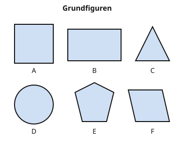

Ebene Grundfiguren
Mit einem KI-Tutor lernen
Ein KI-Tutor erklärt dir diese Seite und hilft dir bei den Aufgaben. Wähl deinen Assistenten:
Mit Claude öffnen Mit ChatGPT öffnen Mit Mistral Vibe öffnen
Du nutzt dein eigenes Konto beim Anbieter. Der Assistent ist kein Angebot von lernapps.net: lernapps liefert nur Inhalte und Aufgaben. Die Wahl gilt für alle Seiten, nur auf diesem Gerät.
Stempel auf der Karte
Nika und Jonas lesen den vierten Hinweis ihrer Schatzkarte: Er zeigt sechs Stempel mit Figuren. Du lernst hier, jede Figur zu benennen und ihre Eigenschaften zu beschreiben. Du brauchst dafür Strecken und Parallelen von den Seiten davor.

© CC-BY-4.0Sechs Stempel A bis F.
Aufgabe
Lösung
Figur C richtige Antwort
Richtig. Das Dreieck hat drei Ecken und drei Seiten.
Figur A
Das Quadrat hat vier Ecken.
Figur D
Der Kreis hat keine Ecken und keine geraden Seiten.
Die Zahl der Ecken gibt vielen Figuren ihren Namen. Drei Ecken sind ein Dreieck.
Ecken und Seiten
Wenn du eine Figur so beschreiben willst, dass jemand sie zeichnen kann, brauchst du Wörter für ihre Teile. Eine Figur aus geraden Strecken heißt Vieleck. Die Strecken sind ihre Seiten, die Punkte, an denen sie sich treffen, ihre Ecken. Ein Dreieck hat 3 Ecken, ein Viereck 4 und ein Fünfeck 5. Ein Kreis hat keine Ecken. Alle Punkte des Kreises haben von seinem Mittelpunkt denselben Abstand.
| Figur | Ecken | Seiten |
|---|---|---|
| Dreieck | 3 | 3 |
| Viereck | 4 | 4 |
| Rechteck | 4 | 4 |
| Quadrat | 4 | 4 |
| Fünfeck | 5 | 5 |
| Kreis | 0 | keine geraden Seiten |
- Vieleck
Ein Vieleck ist eine Figur, die nur aus geraden Strecken besteht, zum Beispiel ein Dreieck oder ein Viereck.
Merke
Eine Figur kann mehr als einen Namen haben. Ein Rechteck ist auch ein Viereck.
Ein Beispiel
Das Rechteck
Ein Rechteck hat vier Ecken und vier rechte Winkel, also vier Ecken wie bei einem Blatt Papier. Gegenüberliegende Seiten sind gleich lang und parallel. Ein Quadrat ist ein Rechteck, bei dem alle vier Seiten gleich lang sind.
Übung
Mit diesen Aufgaben prüfst du, ob du Figuren an ihren Eigenschaften erkennst.
Aufgabe
Lösung
Richtige Antwort: Dreieck – drei Ecken; Quadrat – vier gleich lange Seiten und vier rechte Winkel; Kreis – keine Ecken; Fünfeck – fünf Seiten
Zähle Ecken und Seiten und achte auf rechte Winkel und gleich lange Seiten.
Aufgabe
Lösung
Richtige Antwort: Die Aussage stimmt.
Ein Quadrat hat vier rechte Winkel. Seine gegenüberliegenden Seiten sind gleich lang. Das reicht für ein Rechteck.
Aufgabe
Lösung
Es hat vier rechte Winkel. richtige Antwort
Richtig. Das macht das Rechteck aus.
Alle vier Seiten sind gleich lang.
Das gilt nur beim Quadrat. Ein Rechteck darf lang und schmal sein.
Gegenüberliegende Seiten sind gleich lang. richtige Antwort
Richtig. Die beiden langen Seiten sind gleich, die beiden kurzen auch.
Es hat drei Ecken.
Drei Ecken hat ein Dreieck.
Ein Rechteck hat vier rechte Winkel, und gegenüberliegende Seiten sind gleich lang.
Aufgabe
Drei Beispielaufgaben, jede mit ihrer Lösung:
Aufgabe Nr. 1
Du zeichnest ein Vieleck mit 8 Ecken. Wie viele Seiten hat es?
Tipp
Male ein Vieleck mit wenigen Ecken, zum Beispiel ein Viereck, und zähle Ecken und Seiten.
Lösung
- Jede Ecke gehört zu zwei Seiten, und jede Seite hat zwei Ecken. Ecken und Seiten sind gleich viele.
- Bei 8 Ecken sind es 8 Seiten.
Richtige Antwort: 8
Aufgabe Nr. 2
Du zeichnest ein Vieleck mit 7 Ecken. Wie viele Seiten hat es?
Tipp
Male ein Vieleck mit wenigen Ecken, zum Beispiel ein Viereck, und zähle Ecken und Seiten.
Lösung
- Jede Ecke gehört zu zwei Seiten, und jede Seite hat zwei Ecken. Ecken und Seiten sind gleich viele.
- Bei 7 Ecken sind es 7 Seiten.
Richtige Antwort: 7
Aufgabe Nr. 3
Du zeichnest ein Vieleck mit 9 Ecken. Wie viele Seiten hat es?
Tipp
Male ein Vieleck mit wenigen Ecken, zum Beispiel ein Viereck, und zähle Ecken und Seiten.
Lösung
- Jede Ecke gehört zu zwei Seiten, und jede Seite hat zwei Ecken. Ecken und Seiten sind gleich viele.
- Bei 9 Ecken sind es 9 Seiten.
Richtige Antwort: 9
Fehler gefunden oder eine Idee für diese App?